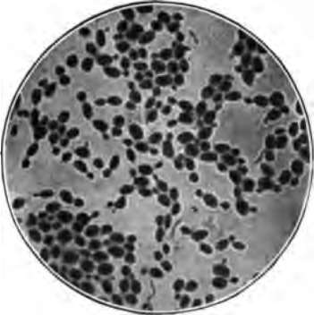

Chapter VII. Drink And Health
Description
This section is from the book "The Human Body And Health", by Alvin Davison. Also available from Amazon: The Human Body and Health.
Chapter VII. Drink And Health
Use Of Water
Most people do not drink so much water during cold weather as the body needs. The body requires about three quarts of water daily to supply the wants of the tissues and wash the impurities out of the system. Since not much more than a quart of water is present in the daily amount of food used, at least six glasses of water should be drunk.
The use of much ice water is unhealthy, and may cause sickness when one is very warm. Some people injure their health by trying to satisfy their thirst with beer or whisky. Pure, cool, water is the best liquid to quench the thirst.
Impure Water
More than a hundred thousand persons in this country are made ill every year, by the use of impure water. Three fourths of all cases of typhoid fever come from the use of water containing the germs of this disease.
Nearly all rivers supplying water to cities and towns contain some typhoid germs. Through the carelessness of the sick, or those who care for them, the germs may get into springs and wells. Water which looks clear may be very dangerous. The water of a stream running through an inhabited region is not safe to drink without.
How Water Is Made Unsafe
Meat and other foods are spoiled by many kinds of bacteria. Water may have thousands of bacteria in every cupful, but it will cause no disease, unless the germs from sick persons, or animals, are present. The green plants often seen growing in springs do not harm the water.
A well near a barnyard or cesspool is likely to be unsafe for use. The liquids enter the soil, and sometimes follow along the crevice in rocks a hundred feet or more. Sewage, which is household waste, garbage, or dead animals cast into a stream, or placed near a well or spring, may cause many deaths among those using the water. The excretions from one person sick with typhoid fever, near Wilkes-barre, in Pennsylvania, were thrown out on the bank of a stream, and caused over a thousand cases of fever, and more than one hundred deaths among those using the water, several miles down the stream.
Fig. 40. How the well often becomes impure and carries disease.
How To Make Water Safe
Any water may be made safe for drinking by boiling it one minute. Longer boiling gives the water a flat taste. The water may be cooled over night in a stone jar, and then placed in the ice box.
Many of the cities run their water through a layer of sand and stones to remove the germs. This is known as filtration or filtering of the water. Any city using river water may save much sickness, and many lives yearly, by filtering the drinking water. During the years 1900 to 1905, thousands of people in Pittsburg, New Orleans and Philadelphia died from the use of impure water.
The Alcoholic Drinks
The alcoholic drinks, often called liquors or strong drinks, are composed largely of water, alcohol, and flavors. None of these drinks contain any disease germs, but when used day after day they often cause weakness, and disease in some organs of the body. The common drinks containing alcohol are: whisky, beer, brandy, rum, wine, porter, ale, cider, and birch beer.
Why Alcoholic Drinks Are Used
Some people drink whisky in cold weather because they think it makes them warm, and others use it in warm weather to make them cool. As alcohol partially deadens the feelings, the drinker does not know when he is hot or cold.
When persons feel lazy and dull they sometimes take a drink, to make them feel lively and cheerful. As this pleasant effect of a drink lasts only an hour or two, more drink must be taken frequently. In this way an unnatural thirst is developed, and one feels a continual longing for liquor. If he continues to satisfy the longing day after day, an awful appetite is likely to grow in him, until he is no longer able to keep from drinking, even though he may try very hard.
Fig. 41. Yeast plants used in making beer. Much enlarged.
Some persons drink to forget sorrow and trouble. It is very foolish to do this, because the effect of the drink wears off in a few hours, and then the sorrow is more bitter than ever. Others drink to be social, and because for a short time the drink helps them to talk more glibly. Drinking for such reasons is unwise, because alcohol puts their common sense to sleep and they are likely to do and say very foolish things.
How Alcohol Is Made
Alcohol is made by the growth of yeast in some liquid containing sugar. Yeast is a tiny plant having somewhat the shape of a football. The yeast cake bought at the store contains millions of these plants. They may be easily seen in a bit of yeast cake, mashed up in a drop of water, under the microscope. Warmth causes the plants to grow and change part of the sugar to alcohol and carbon dioxide.
If a part of a yeast cake is put in a glass of sweetened water kept warm, a bubbling or frothing of the liquid will occur in two or three hours. The action produced by the growing yeast is called fermentation. Alcohol is then formed as may be learned by the biting or sour taste of the liquid.
Beer
Beer, ale and porter are called malt liquors. They are so named from the malt used in making them. Malt is grain, sprouted to change its starch into sugar. Barley is the grain used in making beer. The yeast plant uses the sugar of the barley to make the alcohol. Hops are added to give the proper flavor to the beer.
Fig. 42. Vats in a wine room for fermentation.
Beer contains but little alcohol, and is not useful for food as it contains but a trifle of nourishment. It may help one who eats plenty of food to get fat, because it prevents the oxidation of those substances which form fat in the body. This kind of fat is not a sign of health.
Continue to: